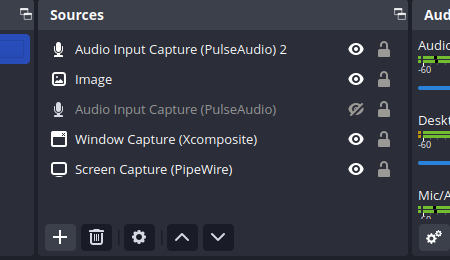

OBS: Window Capture jooksutas programmi kokku
Iga kord, kui kasutaja valis Window Capture’i, jooksis OBS kokku. Samal ajal oli vaja salvestada ainult üht Brave’i kaarti; OBS-i Browser-allikas ei võimaldanud soovitud interaktiivset kasutamist.

Seis: kokkujooksmise lahendust päeva lõpuks ei kinnitatud.